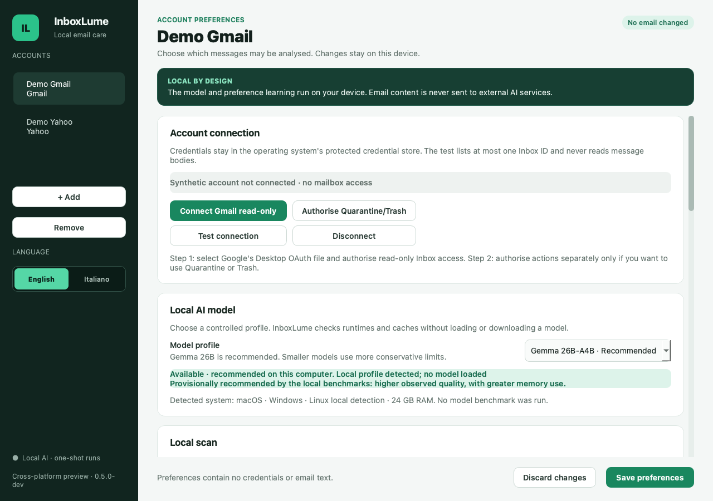

01 · CONTEXT
Judge the specific message
Age, category, and sender are signals rather than verdicts. A promotion may matter; a legitimate notification may not.
InboxLume understands Inbox content with a local model, learns from private corrections, and acts only through narrow reversible guardrails.
Sender rules cannot understand why two messages from the same organisation may have opposite value. Cloud AI can interpret content, but introduces another party into the data path. InboxLume explores a third approach: local semantics, minimum authority, and abstention whenever evidence is insufficient.
Age, category, and sender are signals rather than verdicts. A promotion may matter; a legitimate notification may not.
Quiz answers and behaviour become HMAC-derived fingerprints and minimised features. Sender, subject, and body are not stored in plaintext.
Protected categories, conflicts, attachments, low confidence, or missing runtimes cause review. Quarantine remains the recommended path.
Reading, inference, decision, and execution are separate responsibilities. The model sees sanitised text in memory, but no credentials or mailbox methods. The executor receives only opaque IDs selected by policy.

Gmail uses Inbox labels and allowlisted transports; Yahoo selects only INBOX. SMTP, Sent, Drafts, and settings do not exist in the operational domain.
A quiz, scan, or schedule runs only when requested. A scan may use a bounded batch or continue until no eligible email remains; the model is unloaded afterwards.
Visible per-account Quarantine, a fresh check before Trash, and no API for permanent delete or empty-trash.
| Dimension | InboxLume | Typical cloud-AI approach |
|---|---|---|
| Inference | On device, from an existing local cache | On provider infrastructure |
| Email content | Email provider → device; no external AI service | May be transferred to the AI service, depending on the product |
| Personalisation | Local state isolated per email account | Often attached to an account with the service |
| Resources | User RAM and compute, only during a run | Remote compute, network latency, and service availability |
| Inspectability | Code, policy, and audit can be inspected | Depends on provider transparency |
InboxLume must still communicate with Gmail or Yahoo to receive and organise mail. “Local” describes inference, preference learning, and private state after transfer from the selected provider; it does not mean that the provider no longer stores the email.
Average accuracy can hide the expensive failure: moving mail that should have been kept. InboxLume measures false cleanup, coverage, and abstention. A small sample leaves substantial uncertainty even when no error is observed.
With n independent cases and zero errors, this simple one-sided 95% upper bound is about 7.2% at 40 cases. Going below 1% takes approximately 299 comparable error-free cases. Real inboxes violate the clean assumptions: topics and interests change, so drift and rare families require more caution.
An LLM's confidence is not presented as a calibrated probability. The Safety Governor uses HMAC-linked local evidence: missing evidence leaves the ordinary filter unchanged, while concrete repeated errors restrict only the affected family. Ordinary Direct Trash remains independent under model, calibration, policy and confirmation safeguards. The Governor itself gains Trash authority only with a supported model and at least 299 conclusive, error-free reviews overall and in the family. Permanent deletion and emptying Trash are never authorised.
More accessible and faster. A 0.97 operational threshold and Quarantine only after greater confusion between legitimate advertising and spam.
An MLX compromise on Apple Silicon in the initial integration. A 0.95 threshold and Quarantine only while evidence remains limited.
The current quality profile. Direct Trash is available only after calibration and confirmation, never by default.
| Preliminary observation | Qwen 8B | Gemma 12B | Gemma 26B-A4B |
|---|---|---|---|
| Cold synthetic batch | ≈ 5.4 s | ≈ 8.7 s | ≈ 9.7 s |
| Recorded peak | not measured | 11.2 GB | 14.7 GB |
Measurements from one environment, including load and unload for five synthetic messages. They are neither universal speed figures nor sufficient quality evidence for a release.
Every account keeps an independent model, thresholds, quiz, destination, and schedule. The interface explains what is ready and why a capability is blocked, without loading a model merely to open the app. English is the default; Italian is a separately edited localisation. Both languages can appear together in the email being classified.

The Gmail/Yahoo foundation, controlled model profiles, GUI, and scheduling exist. Packaging, CI, and this site are prepared locally, but the release gate remains closed until the agreed features, licence, security review, and verified packages are complete.